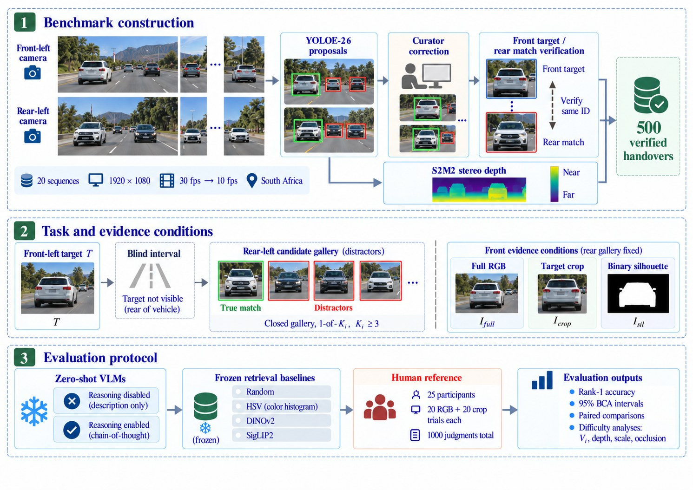

ACCV 2026 Workshop · CV4DC · under review
Front-to-Back: Benchmarking Vision-Language Models for Asymmetric Cross-View Vehicle Re-Identification
1 MindForge AI, Johannesburg, South Africa2University of Hawai‘i at Mānoa, Honolulu, HI, USA
MindForge AI, Johannesburg, South Africa2University of Hawai‘i at Mānoa, Honolulu, HI, USA

Abstract
Matching the same vehicle across front and rear cameras is difficult because the cameras do not share a view and the vehicle’s appearance changes substantially. We introduce Front2Back-ReID, a benchmark of 500 manually verified vehicle handovers from 20 recording sequences in South Africa. Each example asks a model to match a vehicle highlighted in a front-camera image to the same vehicle among at least three candidates in a later rear-camera image. We evaluate seven zero-shot vision-language models, four image-retrieval baselines, and 25 human participants. Models are tested using full front RGB images, cropped target vehicles, and binary silhouettes. The strongest VLM achieved 76.6% Rank-1 accuracy on target crops, compared with 74.0% for the frozen SigLIP2 baseline; this difference was not statistically clear. Human participants achieved 94.0% accuracy with full images and 92.2% with target crops. Under our evaluation setup, enabling reasoning improved accuracy across all three input conditions for every model evaluated in both modes. We also found that VLMs generally performed worse on full scenes than on target crops. These results show that general-purpose VLMs do not yet consistently outperform strong visual retrieval for front-to-rear vehicle matching, while humans remain substantially more reliable.
Benchmark

Results
The best VLM is not clearly better than a frozen SigLIP2 encoder, and people stay far ahead.
Rank-1 accuracy by front evidence
95% BCa intervals over pairs. Δctx = full RGB − crop. LLaVA-OneVision always answers C1. Gemini 2.5 Pro can’t disable reasoning.
Where models break
Target-crop Rank-1 by difficulty. Humans hold steady while models fall on small or occluded targets.

Try the task
Can you beat the models?
Twenty trials in the same format as the human study. Find the highlighted front vehicle in the rear gallery, then see how you compare with people and every model.
Click a box or a label, then confirm. Keyboard: 1–9 select, Enter confirms, Z zooms.
Explore
All 500 handovers
Every pair with its difficulty labels. Switch the front evidence and reveal the match.